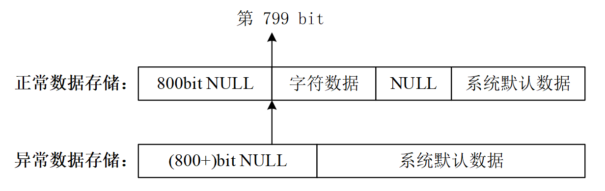

機能特性
TF (task/function) サブルーチンは主に、Verilog とユーザー C プログラムの境界における双方向のデータ転送に使用されます。
TF サブルーチンは常に tf_ をプレフィックスとし、ヘッダーファイル veriuser.h で定義されています。したがって、C 言語でシステムタスクや関数を記述する場合、C ファイルに #include "veriuser.h" を追加する必要があります。
TF サブルーチンの用途は次のように分類できます：
- システムタスクの情報を取得する
- パラメータリストの情報を取得する
- パラメータ値を取得する
- パラメータ値をシステムタスクに返す
- パラメータ値の変更を監視する
- シミュレーション時間とスケジュールイベントの情報を取得する
- 算術演算
- 情報の表示
- タスクの管理・保守
- 一時停止、終了、保存、復元などのその他のタスク
完全な TF サブルーチンとその簡単な使用方法の説明は次のセクションを参照してください『8.3 TF サブルーチン一覧』。
TF サブルーチンの例
PLI サブルーチンライブラリの関数は数が多く、一つずつ例を挙げて説明すると大量の篇幅が必要になります。そのため、必要になった時に個々のサブルーチンを詳しく調べることをお勧めします。以下では TF 内の一部のサブルーチンの例のみを示し、TF サブルーチンを使用して Verilog システムタスクを設計する基本的な流れを主に説明します。
設計要件
場合によっては、C 言語ファイルのコンパイル後のオブジェクトファイルサイズを小さくするため、または一定の形式でデバッグ情報を出力するために、ソフトウェア内のプリント関数は C 言語標準の printf 関数を使用せず、TF サブルーチンの io_printf 関数も使用せず、PLI インターフェースを利用して Verilog のシステム表示関数 ($display または $write) を使用してユーザー定義のソフトウェアプリント関数を実現することがあります。
今回はソフトウェアプリント関数を設計し、print_my と命名します。出力形式は「文字列+整数」です。
設計分析
ユーザー定義のソフトウェアプリント関数 print_my は単なる見た目の良くない入れ物であり、プリント情報をソフトウェアの仮引数変数に渡すために使用されます。プリント情報を Verilog に渡すために、TF サブルーチンで構成されたシステムタスクも必要であり、$send_my() と命名します。
説明が必要なのは、TF サブルーチンで実装されたシステムタスクは通常、Verilog コード内で呼び出される必要があるということです。ソフトウェアがこの「システムタスク」を直接呼び出すことは、ソフトウェア関数を呼び出すことに相当し、Verilog コード内の関連変数の記述とは直接的な関係がありません。したがって、ソフトウェア関数 print_my 内で「ソフトウェア関数」send_my を直接呼び出しても意味がありません。そのため、print_my に特定のソフトウェア動作を追加して、システムタスク $send_my が Verilog によって呼び出されるようにトリガーする必要があります。
ディジタルシステムに CPU が含まれる場合は、ソフトウェアでバスやメモリに書き込み、testbench 内で関連する信号変数を監視する方法を使用できます。今回は設計規模が小さいため、別の方法を採用できます。つまり、Verilog 内でシステムタスク $send_my を常に実行し、ソフトウェア関数 print_my 内でグローバル変数を設定して、情報転送とプリントの操作を行うかどうかを制御します。

ソフトウェア設計
ソフトウェア設計のコードは以下のとおりです。詳細はコメントで説明されています。ファイル print_gyc.c に保存します。
例
//プリントする文字列、整数データ、ソフトウェアのプリント開始フラグ
char *str_mes ;
unsigned int int_mes ;
int flags = 0;
//===== define print_my() used in C ======
void print_my(char * str_send, unsigned int int_send){
str_mes = str_send ;
int_mes = int_send ;
flags = 1 ;
}
//プリントする文字列に対応するASCIIコードの文字型データ。元の文字型の長さは100に制限されます
//例えば、文字"1"に対応するASCIIコード0x31の文字型データは0x33、0x31です
char str_mes_format[200] ;
//TF サブルーチンが文字列型のデータを渡す場合、関連する進数形式のデータのみ渡すことができます
//例えば、"0xc0de1234"は渡せますが、"www.runoob.com"は渡せません
//そのため、元の文字列データを対応するASCIIコードの文字型データに変換する必要があります
void byte2hexstr(char* str, char* dest, int len)
{
char tmp;
int i ;
char stb[16] = { '0', '1', '2', '3', '4', '5', '6', '7', '8', '9', 'A', 'B', 'C', 'D', 'E', 'F' };
for (i = 0; i < len; i++){
tmp = str[i];
dest[i * 2] = stb[tmp >> 4];
dest[i * 2 + 1] = stb[tmp & 15];
}
return;
}
//===== define PLI: send_my() =======
void send_my(){
int i = 0 ;
//ソフトウェアのプリント開始フラグ flags を検出
//かつシステムタスク $send_my が Verilog によって呼び出されたときに3つのパラメータが渡されます
if (flags && tf_nump()==3) {
//プリントする文字列データをASCIIに対応する文字列型に変換
byte2hexstr(str_mes, str_mes_format, 100);
//16進数の文字型データをシステムタスク send_my の2番目のパラメータに渡します
//長さは1600ビットで、100個のchar、200個のASCII文字型データに対応します
tf_strdelputp(2, 1600, 'H', str_mes_format, 0, 0);
//整数データを3番目のパラメータに渡します
tf_putp(3, int_mes);
//ハードウェアのプリント開始フラグを1番目のパラメータに渡します
tf_putp(1, 1) ;
flags = 0 ;
}
}
ハードウェア設計
シミュレーションテストによると、ソフトウェアから Verilog に渡されたデータは、ビット幅 1600bit のレジスタ内で以下の図のように格納されます。

レジスタに正常なデータが格納されている場合、このレジスタは799ビット目（レジスタのビット幅の半分）から正常な文字データの格納を開始します。下位の残りのビット幅には"NULL"（データ0に対応）とシステムデフォルトのデータが格納されます。これら2つの部分のデータ長は、格納される正常なデータの長さに応じて変化します。
レジスタに正常なデータがない場合、このレジスタは800ビットを超えるレジスタ長を使用して"NULL"（データ0に対応）を格納します。残りのビット幅にはシステムデフォルトのデータが格納されます。
上記の特性に基づいて正常な文字列データを検出できるため、レジスタ内のデータをすべてプリントする必要はなく、プリント情報に大量のスペースが含まれて見栄えが悪くなるのを防ぐことができます。
ハードウェアの Verilog コード設計は以下のとおりです。具体的な詳細はコメントで説明されています。ファイル test.v に保存します。
例
module test ;
reg [1599:0] str_my ;
reg [31:0] int_my ;
reg flag_my ;
//常にハードウェアのプリントフラグ flagh を検出してプリントするかどうかを決定
integer i = 1599;
integer j = 1599;
reg [7:0] str_tmp ; //文字列データ格納レジスタ
initial begin
flagh = 0 ;
forever begin
#20 ;
//システムタスクを呼び出し、データをソフトウェアからハードウェア（Verilog）に渡す
$send_my(flagh, str_my, int_my);
if (flagh) begin //プリント情報を開始
#1 ;
//レジスタのビット幅には冗長性があるため、すべてプリントすると大量のスペースが現れる
//ここでは未使用のレジスタを検出し、プリント表示をマスクする
for(i=1599; i>=0; i= i-8) begin
if (str_my[i -: 8] != 0)
break ;
end
//通常はレジスタの半分のビット幅で文字列データを格納する
//そのため、文字列の転送が正しい場合、str_my
$display("--DEBUG--- Valid data number: %d", i);
//文字列データがない場合でも、str_my はすべて空になるわけではない
//ただし、str_my[799 -: 8] にはデータはない
if (i<=791) begin
$display("--ERR--- PLEASE INPUT VALID STRING INFO!!!");
$display("--ERR--- Default data number: %d", i);
$display("--ERR--- String data structure: %h", str_my);
end
else begin
$write("---YYY---");
for(j=i; j>=0; j= j-8) begin
str_tmp = str_my[j -: 8] ;
//再び空文字を検出したらプリント表示を停止
if (str_tmp == "") begin
break ;
end
//1文字ずつプリント
else begin
$write("%s", str_tmp);
end
end
//整数データをプリント
$write("%h \n", int_my);
end
/* $display はレジスタベクトルフィールド内の変数アクセスをサポートしない
//したがって、以下の記述は正しくなく、$write を逐次使用してプリントするしかない
else begin
$display("--YYY--- %s%h", str_my[i : j], int_my);
end
*/
flagh = 0 ;
end
end
end
//シミュレーションを停止
initial begin
forever begin
#10000;
if ($time >= 300) $finish ;
end
end
endmodule
ソフトウェア呼び出し
今回の設計ではソフトウェア部分が自発的に実行できないため、TF サブルーチンで設計された Verilog システムタスクをもう1つ追加します。このシステムタスクが testbench 内で実行されると、ソフトウェアプログラム内の関数 print_my を呼び出すことができます。
ファイル print_gyc.c に以下の C コードを追加します：
if (tf_getp(1) == 1) //システム関数の最初のパラメータ値が1の場合
print_my("It's the first successfull print: ", 0x20170714);
else if (tf_getp(1) == 2) //システム関数の2番目のパラメータ値が2の場合
print_my("2nd: ", 0x09070602);
else
print_my("", 0x1); //文字列データを転送しない場合はエラーを報告
}
ファイル test.v に以下の Verilog コードを追加します：
initial begin
#100 ;
$call_c_print(1);
#100 ;
$call_c_print(2);
#100 ;
$call_c_print(3);
end
コンパイルとシミュレーション
Linux で以下のコマンドを使用して print_gyc.c をコンパイルし、print_gyc.o ファイルを出力します。相対パスに注意してください。
gcc -I ${VCS_HOME}/include -c ../tb/print_gyc.cVCS でコンパイルするには、VCS が認識できるリンクテーブルファイルを作成する必要があります。ファイル名は pli_gyc.tab とし、内容は以下のとおりです。
$send_my、$call_c_print は Verilog が呼び出すシステムタスク名です；
call=my_monitor、call=call_c_print などは、ソフトウェア C プログラム内の関数を呼び出すことを示します；
$send_my call=send_my $call_c_print call=call_c_print
VCS コンパイル時に以下のパラメータ行を追加します。
-P ../tb/pli_gyc.tab
シミュレーション結果は以下のとおりです。
図からわかるように、プリント出力は正常で、余分なスペース情報はありません。
プリント情報に文字列データがない場合、Error が報告され、いくつかのデバッグ情報が出力されます。
testbench 内のいくつかのパラメータを変更して、データ格納形式に関するデバッグ学習を行うことができます。

クリックしてノートを共有
<p style="font-size:14px;">メモはこの記事の内容の拡張である必要があります！</p><br> <p style="font-size:12px;"><a href="../tougao.html" target="_blank">記事の投稿は、ここをクリック</a></p> <p style="font-size:14px;"><a href="./runoob-user-test-intro.html" target="_blank">登録招待コードの取得方法</a></p> <h3 class="text-muted"><i class="fa fa-info-circle" aria-hidden="true"></i> メモを共有する前に<a href=".." class="runoob-pop">ログイン</a>する必要があります！</h3> <p><a href="./runoob-user-test-intro.html" target="_blank">登録招待コードの取得方法</a></p>